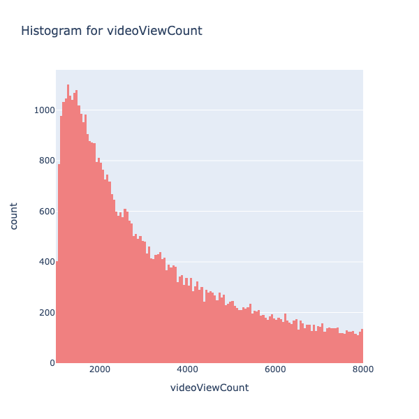
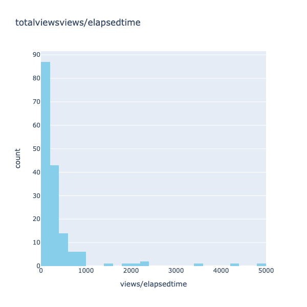
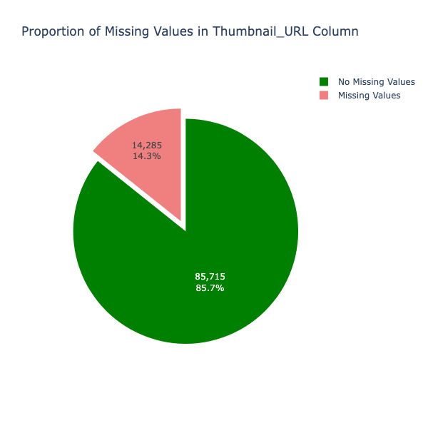
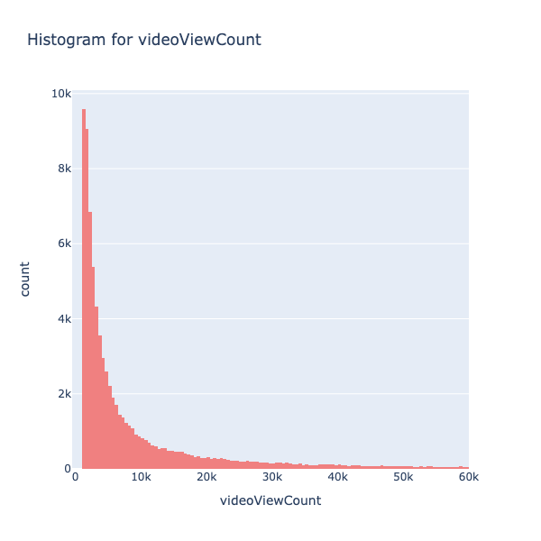
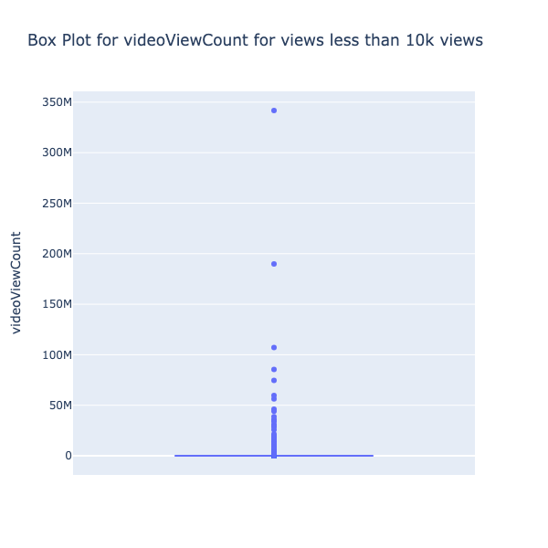
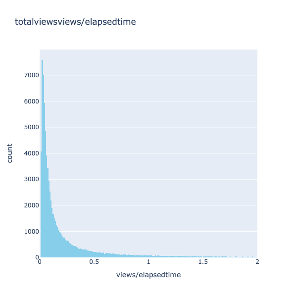
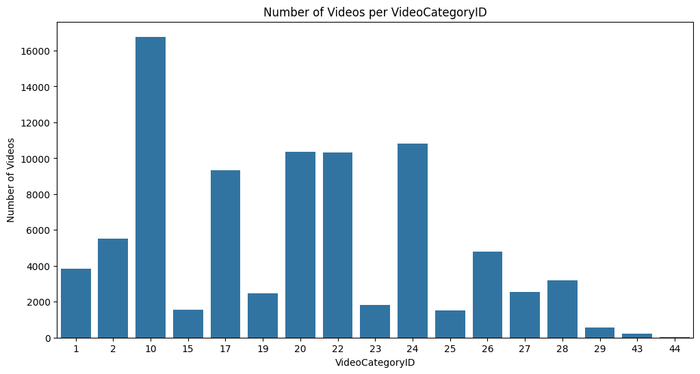
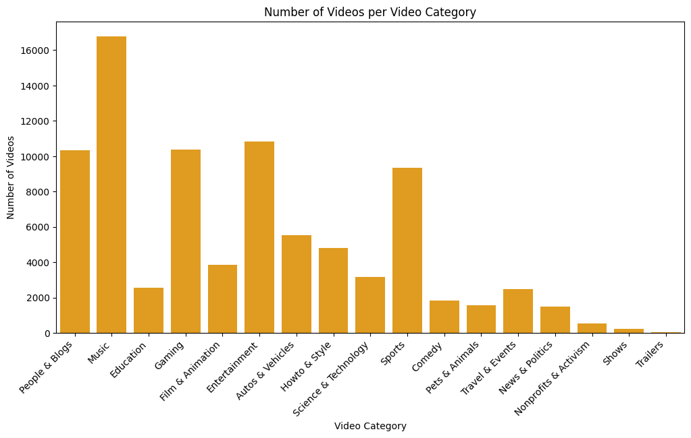

YouTube has been the leader among content creation platforms for decades, witnessing a surge in the variety of uploaded content. YouTube demands creators to showcase their talent and optimize their content to increase the number of views, ultimately maximizing its reach. This research aims to determine the most crucial factors in boosting the number of views, with a primary focus on elements presented to users - specifically, thumbnails and titles (refer Fig. 1). While video content, watch time, likes, shares, and subscribers play significant roles in YouTube's video recommendation system, this study examines whether titles and thumbnails have a noteworthy impact on converting a video recommendation into an actual view.
The author's previous research establishes that titles indeed play a role in influencing views. The study observed that shorter titles gained more traction compared to longer ones. Furthermore, the research involved modeling BERT to classify titles based on their characteristics into various view brackets, yielding precision, recall, and F1 score in the proximity of 75%. The current study aims to build upon this research by extending the idea of titles' influence on views and incorporating the characteristics of thumbnails.
 Fig. 1 Youtube video format
Fig. 1 Youtube video format
 Fig. 2 Youtube Analytics
Fig. 2 Youtube Analytics
YouTube Analytics Application is a platform created by Google for YouTube content creators to analyze their data. It displays basic analytics such as the number of views, shares, likes, dislikes, subscribers, and click-through rate. Additionally, it provides content creators with the freedom to visualize their data to gain more insights into the relationship between variables. The platform offers in-depth analysis of video performance, aiding content creators in improving video quality and content. Despite these features, there is currently no tool or analytics within the platform specifically designed to help creators craft effective titles and thumbnails – a critical aspect of content creation. The focus of this research is to build a tool that assists content creators in evaluating the quality of their titles and thumbnails. To proceed with building the application, it is crucial to address some of the truly intriguing research questions,
Through this approach, the model seeks to gain insights into the human mindset, specifically addressing the question: 'What prompts a user to click on a YouTube video once recommended?' Breaking it down into 10 research questions,
The research questions stated above should give a deeper understanding of the underlying reasons behind viewer engagement and the intricate dynamics influencing the success of YouTube videos. The data collected to analyse and answer the above questions are collected from various sources. The following section will examine the data collection process,
The major chuck of data that has been utilized in this project has been taken from Kaggle, uploaded by VISHWANATH SESHAGIRI [source]
Youtube API was utilized in collecting youtube title information given the video ID. Title is one of the most essential components of the data
Youtube API was utilized in collecting video thumbnail URLs given the video ID. Title is one of the most essential components of the data [Source code]
API is used to download the images from the thumbnail URLS, the downloaded thumbnails are stored into a google drive link [Source code]
This section will take you on a journey in understanding the underlying data and cleaning it for analysis and modeling
The word cloud (refer to Fig. 3) provides an overview of the columns present in the data. It should be noted that the word cloud was generated to emphasize words with higher repetition. It is evident that several 'Unnamed' columns may have been generated while storing data using an API key; these should be removed. Additionally, the 'index' column serves no purpose and can be excluded. Other columns should be retained for further analysis.
Fig. 4 Proportion of missing values in titles column
After some cleaning, it is observed that none of the columns have missing values. To proceed with data preparation, a deeper examination of the columns is required. The following section will focus on the most important columns and aim to clean them, completing the data cleaning process.
The video view count (Refer Fig. 6) seems to follow a exponential distribution, to understand the distributions better, the histogram for the views under 8k views is plotted. It should be noted that there is a data point that falls below 0, which is not plausible as views cannot go below 0. This issue will be resolved by removing the single row containing this anomaly.
The histogram for views under 8k (refer Fig. 7) reveals that the majority of records fall within the bracket of 0 to 4000 views. To build a classification multimodal, achieving a more balanced distribution of data across various view brackets is essential. This aspect will be addressed in the upcoming sections of the research, where additional data will be collected to ensure a more even distribution.
Fig. 7 Histogram for video view count (zoomed in)
The box plot (Refer Fig. 8), although not providing detailed information about quantiles, primarily focuses on identifying outliers. It is observed that the dataset contains numerous outliers, with some particularly significant ones having a view count exceeding 50M. Notably, there are very few videos with more than 50M views. The potential impact of these outliers on the analysis will be assessed after collecting more data to determine if this pattern persists.
One of the more intriguing columns to observe is 'views/elapsedtime.' This column interprets views not merely as raw data but as a variable that changes over time. It aids in understanding whether a video gained views steadily over the long run or experienced immediate effects, and vice versa.
Fig. 10 Distribution of the views/elapsed time (zoomed in)
It is interesting to note that there are numerous videos with views exceeding the time elapsed by a factor of 100 to 5000 (Fig. 10). This is a notable observation, suggesting that these videos gained traction very quickly, possibly due to a higher number of subscribers on the channel. The audience's immediate interest in upcoming videos could explain the rapid viewership. However, as our focus is on assessing the impact of titles and views on overall viewership, such cases may not accurately represent the relationship. Consequently, these rows will be removed from the dataset.
The data interestingly spans across the majority of YouTube categories (Fig. 11 and Fig. 12), exhibiting an almost equal distribution among key genres such as entertainment, people and blogs, gaming, and sports. It should also be noted that most of the genres have more than 2000 vidoes in the data containing 100k data points. This diversity is beneficial, as modeling the data can provide insights into the impact of titles and thumbnails not only within a single category but across a wide spectrum of categories.
The two plots (Fig. 4 and Fig. 5) depict the number of missing values for the columns 'titles' and 'Thumbnail_URL'. It is observed that after the API data collection for 100k data points, almost 14% of the data had missing values. Removing rows with missing values is essential, as rows lacking the most important features for the research are practically not useful. The number of videos could be increased by collecting more data using the API, a step that will be taken in the further sections of the research work.
Fig. 5 Proportion of missing values in thumbnail URL column
Fig. 6 Histogram for video view count
Fig. 8 Box plot of video view count
Fig. 9 Distribution of the views/elapsed time
From Fig. 9, it must be noted that most of the values lie in the range of 0 to 1, which means that most of the videos present in the data has views less than the time elapsed after posting the video. Which is obvious as majority of the videos lied in the view brackets of 0 to 4k and mostly channel elapsed time woud be greater than the number of views the video gained. But the intesting points are the ones from 100.
Fig. 11 Videos per video categoryID
Fig. 12 Videos per video category
Phone: (+1) 720 3343493
Rohit.Raju@colorado.edu
1600 Amphitheatre Parkway
Mountain View, CA
94043 US